ECLIPSE IDE
Cómo instalar Eclipse IDE
 >
>
1. Requisitos previos
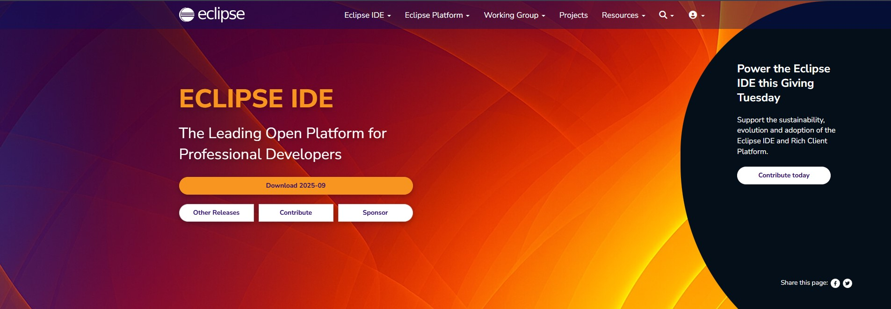
Eclipse necesita tener instalado Java. Antes de instalar Eclipse asegúrate de tener:
- ✔ JDK (Java Development Kit) instalado
- ✔ Java 17 o superior
2. Descargar Eclipse IDE
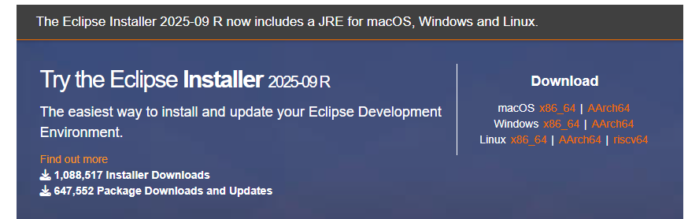
Busca en Google: “Eclipse IDE download”.
Entra en la página oficial de Eclipse.
Haz clic en Download x64 (o la versión correspondiente).
Descarga el archivo Eclipse Installer.
3. Instalar Eclipse (con el instalador)
Paso 1: Abrir el instalador
- Windows: ejecuta el archivo .exe
- Linux: dale permisos y ejecútalo
- macOS: abre el .dmg o el instalador
Paso 2: Elegir la carpeta de instalación
Puedes dejar la ruta por defecto.
- Windows: C:\Users\TuUsuario\eclipse
- Linux: en tu carpeta de usuario
- macOS: en Aplicaciones
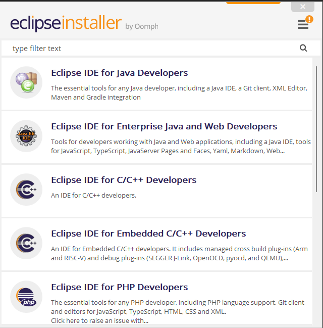
Paso 3: Instalar
Haz clic en Install
→ Acepta los certificados si los pide
→ Espera a que termine
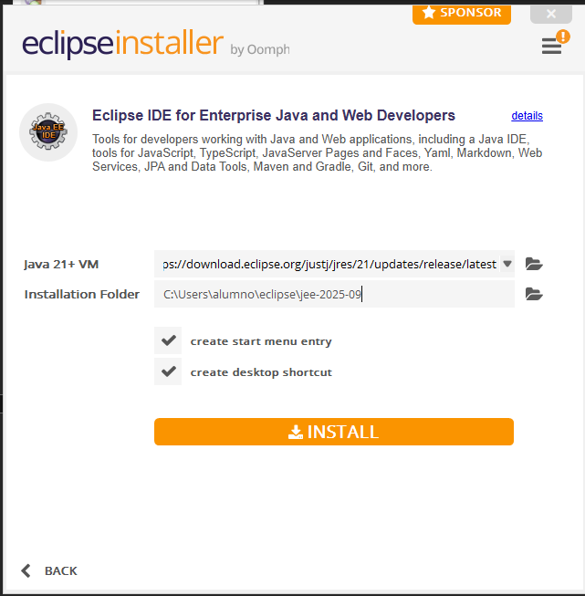
Opciones de Eclipse
- Pantalla principal: vista inicial del IDE.

- File: permite abrir archivos o crear nuevos.
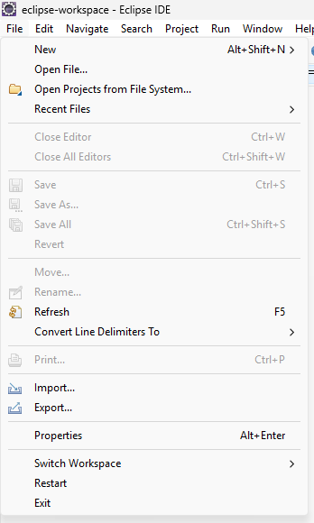
- Edit: aquí podemos modificar, eliminar y copiar código.
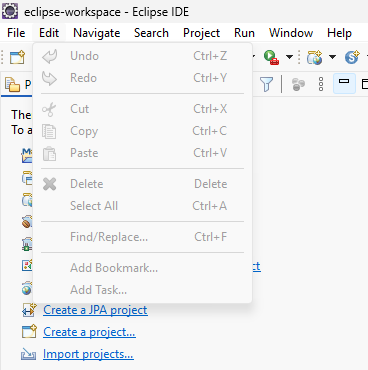
- Navigate: permite moverse rápidamente entre archivos y ver el historial.
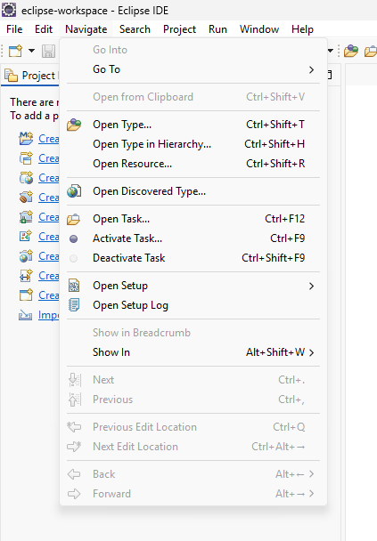
- Search: sirve para hacer búsquedas específicas dentro del proyecto.
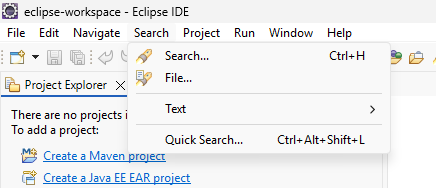
- Project: sirve para gestionar, actualizar y construir proyectos.
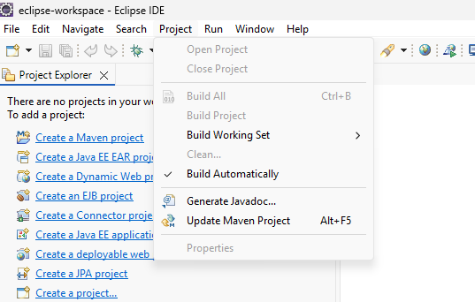
- Run: sirve para ejecutar y depurar el programa.
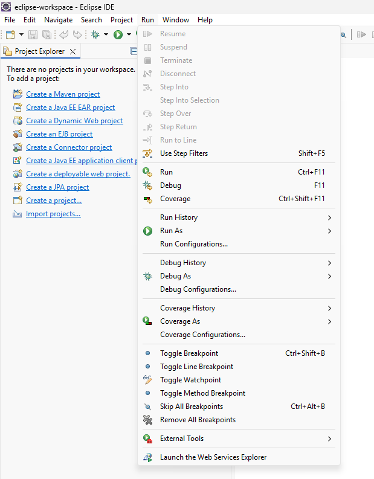
- Window: sirve para configurar la apariencia, vistas, perspectivas y organización de ventanas.
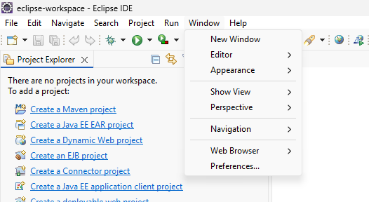
- Help: permite acceder a la página oficial o buscar ayuda en caso de problemas.
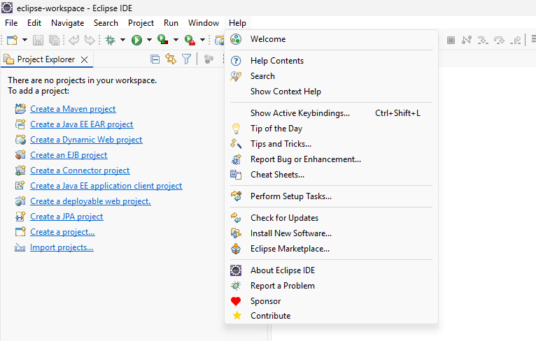